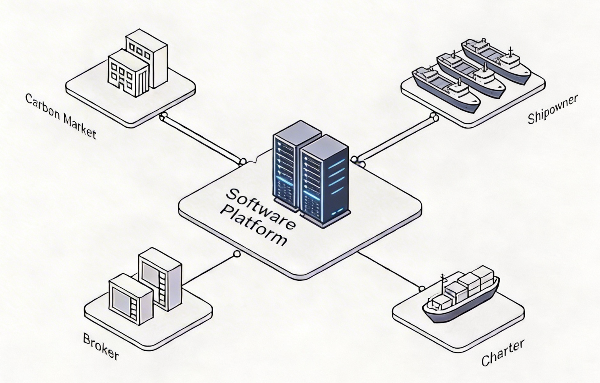

Maritime Finance & ESG
A maritime fintech platform that helps teams understand and act on financial exposure and operational data, providing a decision support layer for shipping companies, starting with EU ETS and carbon-related costs.
1 Problem
Small and mid-sized shipping companies face growing financial exposure from environmental regulation, carbon costs, and fragmented operational data. Today, these risks are often managed through spreadsheets, manual calculations, and disconnected communication between shipowners, charterers, managers, and brokers.
2 Solution
We provide a decision layer that converts vessel data, emissions estimates, reports, and market signals into financial exposure, risk indicators, and action triggers. The platform starts with EU ETS and carbon-related workflows, with the ability to expand into additional regulatory and operational risk areas.
3 Why now
Environmental regulation is becoming a direct financial variable in shipping. Companies need practical software that connects operations, compliance, and finance, without requiring heavy enterprise integrations or sensitive financial data from day one.

Business model
Subscription per vessel, with optional premium modules for advanced risk analysis, workflow automation, and external data integrations.
Status
Architecture defined, MVP in development, core carbon exposure workflow under investigation, and external data/report integrations planned.
Vision
Become the financial decision layer for environmental and regulatory risk in shipping, starting from carbon exposure and expanding into broader risk and penalty management for vessel operations.
Who it serves
Primary users: Small and mid-sized shipowners, charterers, ship managers, brokers, and maritime finance teams.
Core value: Better risk visibility, clearer accountability, improved cost planning, and more structured operational decisions.
Risk & Exposure Decision Layer
- - Estimated EU ETS exposure per vessel and fleet
- - Risk indicators based on emissions, reports, and market data
- - Decision triggers for carbon purchasing and compliance planning
- - Optional Excel/report-based accuracy improvement
- - Foundation to expand into broader environmental penalties and financial risks